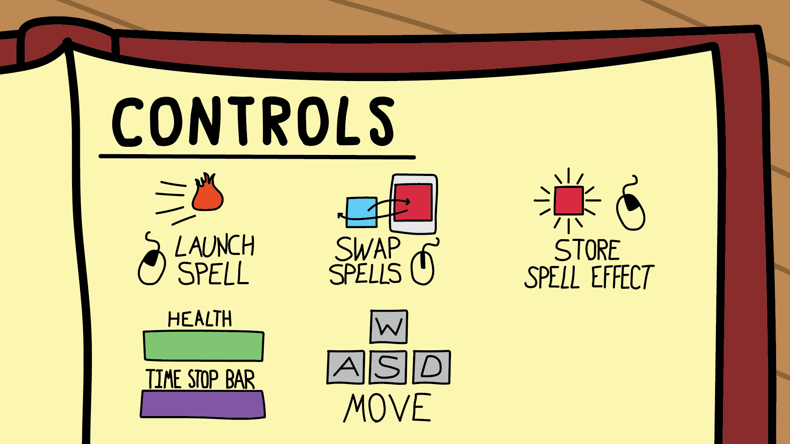
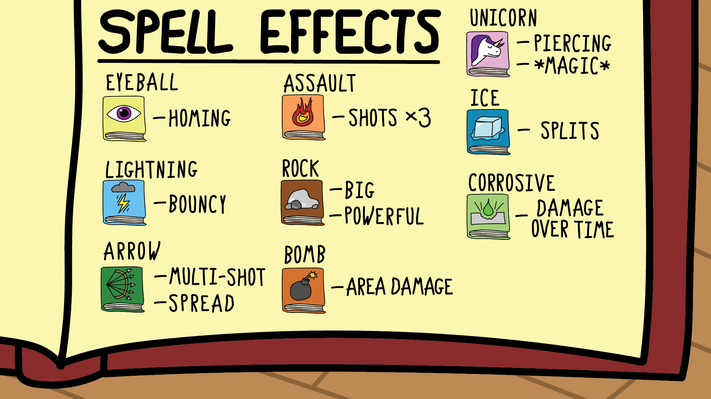
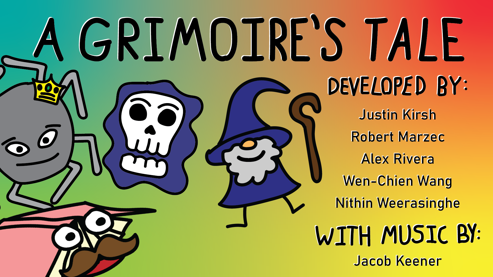

Check out our itch.io page by clicking above!
Help bookie save the library from the evil wizard by collecting books and combining their effects! With nine spells to choose from and the ability to sotre spell effects, the possibilities are endless! Our game features six different enemies plus an additional four different bosses, each with unique behavior and abilities.
 We worked as a team and often helped each other with different aspects of the game, particularly for brainstorming the core theme and mechanics, as we all wanted to play part in the finished product. In addition to helping flesh out ideas, I was also involved with creating the mini-map, card selection, and deck display interfaces. I was also the primary level designer, helped code the regular enemies, and assisted with sound effects, among many other minor tasks.
For our EECS 494 game development class we were tasked with creating a fun and novel game from scratch in 7 weeks with a team of 5. The game should take 10-15 minutes to complete, but be polished and provide an engaging user experience. This includes creating animations, sound effects, music, and "juice". My group consisted of me, Justin Kirsh, Robert Marzec, Alex Rivera, and Wen-Chien Wang. We called ourselves Toasty Lion Studios.
Each week we had to submit a build that would be playtested among other members of the class as well as the course staff. Their playtests and overall feedback would be given to us in the form of video recordings.
Our first task was figuring out a novel mechanic for the core of the game. We knew we wanted to make a top down deck-builder, however our first iteration featured a moddable robot as we thought that could provide lots of flexibility. Unfortunately, that theme didn't pan out well with playtesters and felt boring. We went back to the drawing board and brainstormed new theme ideas before deciding on a book librarian that gets magical spells through other books.
We used an agile development process that included creating weekly builds that provided hard deadlines and allowed for our game to be playtested by others. Our weeks would consist of going over playtesting feedback and taking notes, coming up with a list of goals to improve on delegating tasks, working on those tasks individually, and finally integrating everything together as a group and making sure everything works for our next build deadline. By setting small goals for each week we were working on the project, we were able to slowly develop our game into something better than our original idea. After getting playtesting feedback from our initial game idea, we decided that a robot throwing cards doesn’t really make sense. A spellbook casting spells made for a better theme, and so we spent the next week iterating on our previous idea by applying a library theme to it. After completing this iteration and receiving more feedback, we realized that players of our game felt like they needed more information to progress through the game. So, we spent another week adding things like a minimap for player navigation and a way to see the player’s health and mana. After several weeks of trying, our most recent iteration has been a huge hit with our playtesters. It took many small, incomplete steps to get where the game is currently, but it was completely worth it.
Communication was a major challenge within our group. Team members often had conflicting ideas and were unwilling to make compromises when it came to major components of the game. This often resulted in arguments where little progress could be made and led to several development setbacks. In the future, we hope to make more concrete decisions to help drive progress even if that means not *everyone* is 100% satisfied with the change.
We primarily used discord voice chatting during team meetings for fast and more meaningful discussions. Outside of meetings we used text channels to keep each other updated.This process worked out better than expected as information was communicated in an organized fashion, keeping things clear and making it easy to find old messages.
We learned a lot throughout the development of the game. For example, we found playtests to be invaluable for planning our weekly goals. It gave us continuous insights based on real player experiences.
Not only that, but it put into perspective urgent issues and put everyone on the same page on how our game was perceived, which is hard to figure out in the middle of the implementation of a new mechanic.
In addition, we found many issues to continue when left unaddressed due to prioritizing other aspects of the game. This slowed down development as we should have already fixed known complaints so that we could focus on other things. In subsequent iterations, we plan thoroughly go through every issue brought up and make sure they’re addressed before the next build.
While we plan to invest heavily in playtesting feedback in future projects, we also had to learn the importance of playtesting our own game before build deadlines. We failed to do this early on and it showed in the new player playtests as obvious issues were present, when they shouldn’t have. Plus it gave us a significantly better understanding of our own game. When playtesting our games before creating builds, we were able to get more informative feedback on issues that were less intuitive and harder to spot.
Come our final playtest and we our playtesters were finally satisfied. Our combinational effect system finally felt intuitive and polished and the rest of the game was polished. We published our game at https://toastylionstudios.itch.io/a-grimoires-tale.